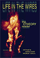
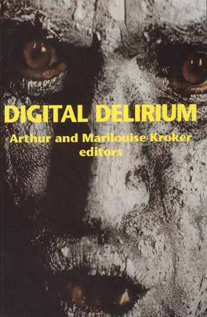

Life in the WiresArthur and Marilouise Kroker, EditorsLife in the Wires is about life today, from Al-Jazeera to eBay, from creatively understanding new media to analyzing how questions of gender, race, class and colonialism have been deeply transformed by networked society.
The Will to Technology and the Culture of NihilismArthur KrokerThe Will to Technology and the Culture of Nihilism is what happens when previously seperated worlds implode, when the embedded time of critical theory streams the hyper-space of the Net.. Digital dialectics as theorizing at the jagged speed of data.
Digital DeliriumEdited and introduced by Arthur and Marilouise KrokerDigital Delirium writes the new horizon of electronic culture. The latest addition to the CultureTexts Series.
Hacking the FutureArthur and Marilouise KrokerWritten in the shadows of the digital age, Hacking the Future tells the story of what happens to us when information technology escapes the high tech labs of Silicon Valley and invades the sites of everyday culture. Shopping the GAP, Branded Flesh, the World-Wide-Web Self: these are some of the survival tales of people who just want to feel again in a culture that is numbed and purified. The accompanying spoken word/music CD by the Krokers and composers Steve Gibson and David Kristian provides a sonic tour of our accelerated culture.
Data TrashArthur Kroker and Michael A. Weinstein"When the shadows grow deeper, and skeletal hands pull the curtain closed, and the talking heads of CNN glow like gibbous moons in the corner, and the majordomo throws another Branch Davidian on the fire, then my choice is clear: I'll pull my collar up and hunker down under the rusty springs of the couch with another heaping helping of Data Trash." -- Bruce Sterling
Technology and the Canadian MindArthur Kroker"...an intellectual tour de force, written with enormous power and insight. Kroker has seized on what is unique and vital and has rendered the Canadian mind itself on a world stage."
-Abraham Rotstein
Politics and Culture
Left BehindStephen PfohlAmerica's vision of itself as a nation blessed by God has provided strong spiritual support for bold and world-changing innovations in the areas of technology, governance, business, communications, imprisonment, and warfare. But this same vision has also long helped America to keep from common sight and collective memory legacies of a far grimmer sort.
Born Again IdeologyArthur KrokerCity Upon a Hill, the American Dream, a sacred covenant--the United States has done that most elusive and perhaps ineffable of all things: wrapped together the language of god and technology into a powerful, adventurous political experiment which is "premodern" in its (religious) sensibility and "posthuman" in it (technological) enthusiasm.
Ideology and PowerEdited and introduced by Arthur and Marilouise KrokerIdeology and Power in the Age of Lenin in Ruins is written in the shadow of the fall of the Berlin Wall. Here, the meaning of power and ideology is finally thought with and against the shattered horizon of socialist and capitalist realism. Thinking anew the theory and practice of democratic politics, the essays put into question the meaning of ideology (as false consciousness) and the meaning of power (as seduction). On the question of ideology, political theorists, including Anthony Giddens, Jurgen Habermas, Claude Lefort and Zygmunt Bauman, challenge the privileging of ideology-critique in orthodox Marxism. This critical reinterpretation of ideology is then accelerated by a radical (Baudrillardian) rereading of the meaning of power as seduction. The book concludes with political analyses of demon politics in the post-Cold War era.
New Media Aesthetics
SpasmArthur KrokerA theory-fiction about the crash world of virtual reality, from the cold sex of Madonna Mutant, the pure sex of Michael Jackson and the dead sex of Elvis to the technological fetishes of Silicon Valley. Written from the perspectives of cultural politics, music, photography, cinema and cyber-machine art, Spasm explores the ecstasy and fadeout of wired culture. Here, we suddenly find ourselves the inhabitants of a glittering, but vaguely menacing, technological galaxy where the machines finally begin to speak. Spasm is a book/CD to take along with you on your hacker journey of the electronic frontier.
SeductionJean Baudrillard, translated by Brian SingerSeduction is Jean Baudrillard's most provocative book. Here, under the sign of seduction all modern theory is put into question. Seduction speaks of the sudden reversibility in the order of things where discourse is absorbed into its own signs without a trace of meaning. In the sudden triumph of seduction in apocalyptic culture there is also signaled the end of history. As Baudrillard says, "Nothing can be greater than seduction itself, not even the order that destroys it."
Panic EncyclopediaArthur Kroker, Marilouise Kroker and David CookIn a stimulating and thoroughly entertaining look at the rapid countdown to the year 2000, the Panic Encyclopedia argues that in the postmodern era, science and technology are the real language of power, and illustrates the resulting culture through a post-alphabetical listing of "panics" - from Panic Art to Panic Zombies, and including Panic Elvis, Panic Psychoanalysis and Panic Sex. Humorously embracing newspaper and media events and philosophers from Hegel to McLuhan, the text chronicles the implosion of the modem world into a final singularity.
The Postmodern SceneArthur Kroker and David CookThe Postmodern Scene is a series of major theorizations about key artistic and intellectual tendencies in the postmodern condition. A variety of texts, ranging from Nietzsche's The Will to Power, Serres' Hermes, Baudrillard's Precession of Simulacra, the visual art of Fischl, Hopper, Colville, and Magritte and recent performance art are used as probes of the human fate in the contemporary century. Here a theoretical reflection is viewed as a privileged artistic act: simultaneously a critical encounter with the "shock of the real" and a meditation in the form of a lament over the "intimations of deprival" which speak to us now of postmodern culture, art, and philosophy in ruins.
Life After PostmodernismEdited and introduced by John FeketeLife After Postmodernism is a pioneering text on the question of value in the postmodern scene. After a long hiatus in which discussions of value have been eclipsed by the death of the subject in post-structuralist theory, this collection of essays suggests that we are on the threshold of a new value debate in contemporary politics, aesthetics, and society. Rejecting the denial of value by Derrida and other representative of New French thought, this collection takes Nietzsche as its point of departure for putting evaluation back on the intellectual agenda and for a new synthesis -- hyper-pragmatism -- of liberalism and Marxism.
Theories of the Body
The Last SexEdited and introduced by Arthur and Marilouise Kroker"The Last Sex looks at the future of gender in an age when the transgendered have emerged as a walking and breathing challenge to old sex definitions. Both the Krokers and the authors included (Kathy Acker, Shannon Bell, Stephen Pfohl) present rallying cries for what the Krokers call "transgenic gender," a new gender that lies beyond our current ideas of sexuality, one that exists outside the dualistic man/woman model." - Richard Kadrey, Future Sex
The Possessed IndividualArthur KrokerThe Possessed Individual rubs North America against contemporary French thought. What results is a dramatic reinterpretation of French theory as a prophetic analysis of the speed-life of the twenty-first century, and a critical rethinking of the politics and culture of the technological dynamo. This book is a hinge between the mirror of seduction that is culture today and the philosophical ruptures of French thought, from Sartre and Camus to Baudrillard and Virilio. And why the fascination with French thought? Because this discourse is a theoretical foreground to the political background of America: fractal thinkers in whose central images one finds the key power configurations of the American hologram. Read the French, therefore, to learn a language for thinking anew the empire of technology.
The Hysterical MaleEdited and introduced by Arthur and Marilouise KrokerA thematically focused exploration of feminism under the sign of male hystericization, critical feminists from Canada, the USA and Britain track the next stage of gender politics. What results is an intense provocative and creative theorization of feminism under the failing sign of the unitary male subject.
Body InvadersEdited and introduced by Arthur and Marilouise KrokerBody Invaders explores the fate of the body in the postmodern condition. Introduced by theses on power and sexuality, it proceeds to analyze the key theoretical contributions of Bataille, Foucault, Baudrillard and Kristeva, and ranges widely over the suppressions and obsessions which mark theoretical discourse and public policy in relation to sexual eroticism, fashion, reproduction and bodily decay.
Feminism NowEdited by Arthur and Marilouise KrokerFeminism Now is like Magritte’s brilliant depiction of blood from the head as rupture and transgression. Memory: that’s the radical promise of feminist critique which is, against the global, cultural amnesia of the modern century, the historical remembrance of temps perdu and of better possibilities not yet achieved. Memory, of both a past yet not written and of a future yet not dreamed, is the truly, and perhaps only, radical political terrain in postmodernism.
The Canadian Series
C.B. MacphersonWilliam LeissCanada's preeminent political theorist, C.B. Macpherson won his international reputation for his controversial interpretations of liberalism. This book - the first to examine the entire range of his writings - seeks to place that interpretation of liberalism within the overall framework of his intellectual development. Focusing on two key themes - property and the state - C.B. Macpherson: Dilemmas of Liberalism and Socialism tracks Macpherson's analysis of the contradictions of liberal-democracy through all of his writings. More than a text on Macpherson, this book contains an explosive historical thesis: the notion of the quasi-market society as the common fate of contemporary capitalist and communist societies.
Culture CritiqueMichael A. WeinsteinCulture Critique features the work of Quebec's key cultural theorist Fernand Dumont in a thorough exploration of the Québécois identity from the Quiet Revolution to the present.
Northrop FryeDavid CookThe bulk of Frye's writings deals with the tradition as it is given from the great writers of Europe; yet, his response to these writers has in an important way been fashioned by his own experience in North America and, more particularly, in Canada. Thus the main theme of this study is Northrop Frye's "America A Prophecy"; a vision of the New World.

 Seduction
Jean Baudrillard, translated by Brian Singer
Seduction is Jean Baudrillard's most provocative book. Here, under the sign of seduction all modern theory is put into question. Seduction speaks of the sudden reversibility in the order of things where discourse is absorbed into its own signs without a trace of meaning. In the sudden triumph of seduction in apocalyptic culture there is also signaled the end of history. As Baudrillard says, "Nothing can be greater than seduction itself, not even the order that destroys it."
Seduction
Jean Baudrillard, translated by Brian Singer
Seduction is Jean Baudrillard's most provocative book. Here, under the sign of seduction all modern theory is put into question. Seduction speaks of the sudden reversibility in the order of things where discourse is absorbed into its own signs without a trace of meaning. In the sudden triumph of seduction in apocalyptic culture there is also signaled the end of history. As Baudrillard says, "Nothing can be greater than seduction itself, not even the order that destroys it."
 Body Invaders
Edited and introduced by Arthur and Marilouise Kroker
Body Invaders explores the fate of the body in the postmodern condition. Introduced by theses on power and sexuality, it proceeds to analyze the key theoretical contributions of Bataille, Foucault, Baudrillard and Kristeva, and ranges widely over the suppressions and obsessions which mark theoretical discourse and public policy in relation to sexual eroticism, fashion, reproduction and bodily decay.
Body Invaders
Edited and introduced by Arthur and Marilouise Kroker
Body Invaders explores the fate of the body in the postmodern condition. Introduced by theses on power and sexuality, it proceeds to analyze the key theoretical contributions of Bataille, Foucault, Baudrillard and Kristeva, and ranges widely over the suppressions and obsessions which mark theoretical discourse and public policy in relation to sexual eroticism, fashion, reproduction and bodily decay.